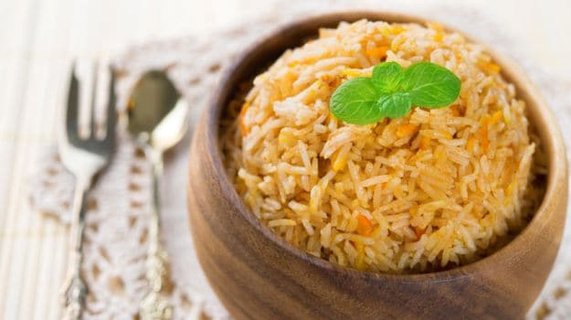

Roghan Josh
It is one of the signature dishes of Kashmir. Robust with varied spices, the dish is cooked with the aroma of fennel seeds, garam masala, bay leaves, turmeric and is indeed a celebration of all senses. A delicious dinner party option, Rgan Josh can be best paired with butter naan or paratha.

Butter Chicken
This gorgeous plate is the reason every Punjabi takes pride in his food. Chunks of chicken marinated overnight in yogurt and a beautiful mix of spices, served with a dollop of melting cream or butter on top. A perfect dinner party recipe, this North-Indian style chicken recipe is made throughout the country with equal zest.

Bhapa-aaloo
A stunner of a recipe, this one gets the Bengali flavours just right. Bhapaa is the Bengali word for steamed and this bengali recipe is exactly what it means. The humble potato tossed in local flavours of panch phoron (five spice powder), coconut paste and mustard oil, steamed to perfection. You can simply say this is a vegetarian version of Bhapaa Maach, just the fish has been replaced with baby potatoes. Simple yet satisfying!

Bhanjari Gosht
Experience authentic Rajasthani flavours with this exquisite blend of yogurt and juicy mutton pieces.This is an easy Indian mutton recipe that you can prepare in about an hour with our step by step process. Serve with rice or any Indian bread at a dinner party. This is also a great recipe for festival get-together during Eid or Diwali.
Chicken stew Appam
This stunning dish comes straight from the hidden treasures of God's own country, Kerala. Chicken stew is a popular dish there as a traditional Easter dish and specially among the Christian families for breakfast or brunch. Chunks of chicken bathed in a beautifully spiced and dreamy coconut gravy with soft-centered appams, a southern-style rice pancake.

Kakori kebab
A famous Nawabi recipe from Lucknow passed down through generations. It derives its name from the city of Kakori on the outskirts of Lucknow. It is made with the finest meat of the lamb and a few spices. These kebabs are soft and tender, served best with coriander chutney.
Hydrabad Biryani
It's the perfect choice for foodies who prefer having their rice with spice, interspersed with tender peaces of meat or chicken. Hyderabadi Biryani is a dish from down the south but spread all across the country and even abroad. Cooked in 'dum style', it's layered with fried onions and mint, serve at dinner parties with a cold raita.
